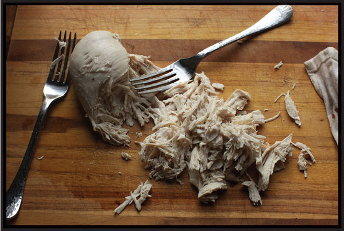

SESAME CHICKEN NOODLES MY WAY (OR YOUR WAY)
|
Yield Serves 4 |
Active Time 30 minutes Total Time 30 minutes |
For maximum efficiency, start poaching the chicken for this recipe before you start the knifework on the additional ingredients. You can also use leftover roasted chicken or rotisserie chicken instead of poaching a chicken breast. If using already-cooked chicken, omit the chicken ingredients, skip step 2, use water or store-bought chicken stock to thin out your sauce in step 5, and shred your chicken as directed in step 6. Save the broth strained in step 4 to use with any recipe that calls for chicken stock in this book. If using unsweetened natural peanut butter, add an extra teaspoon of sugar or honey when making the sauce in step 2. The noodles can be cooked ahead and stored in a sealed container in the fridge for up to 3 days.
My adaptation starts with poaching a chicken breast in water with a couple slices of ginger and scallion, cooking the chicken just until it hits 150°F (66°C) on an instant-read thermometer. This temperature is lower than the government-suggested temperature of 165°F (74°C), but don’t worry; it’s still perfectly safe to eat and a heck of a lot juicier than chicken cooked to 165°F. (See “Chicken and Food Safety” on here for more info.) If you don’t feel like poaching chicken, you can omit it or use leftover roast chicken or rotisserie chicken from the supermarket.
While that chicken is poaching, I julienne my cucumbers and scallions, then mix together a sauce that’s mainly peanut butter (for this recipe regular old supermarket Skippy will do fine), seasoned with vinegar, soy sauce, chile garlic sauce, and sugar.
I’ve written down a recipe for the sauce here, but it’s more useful to think of it as a set of guidelines, as I rarely make it the exact same way twice at home. You can use chunky or smooth peanut butter (or even almond or cashew butter). You can add sesame oil or not (or add a dollop of tahini or Chinese sesame paste if you’re in the mood). The garlic and ginger are optional. Any kind of vinegar or even citrus juice will do, including cider vinegar, lime juice, or even balsamic. Don’t want it hot at all? Leave out the hot sauce. Want it hotter? Add more. The amount of sweetener I add depends on my mood as well as whether or not my peanut butter was the sweetened kind or the natural kind.
At the end of the day, the balance you’re looking for is creamy, acidic, salty, sweet, and hot, and so long as each of those elements is represented and works for your own palate, the details are irrelevant.
Aside from control over texture, the other advantage of poaching your own chicken is that you end up with a couple quarts of delicious chicken-scallion-ginger broth. The strained broth can be used in place of chicken stock for any recipe in this book.


INGREDIENTS
For the Noodles:
Kosher salt
2 teaspoons (6 g) baking soda
1 pound (450 g) dry spaghetti, linguine, or fettuccine
A little peanut, rice bran, or other neutral oil
For the Chicken (see Notes):
One 8-ounce (225 g) boneless, skinless chicken breast
2 coin-sized slices fresh ginger
2 whole scallions, cut into 2-inch segments
For the Sauce:
⅓ cup (80 ml) chunky peanut butter (see Notes)
2 tablespoons (30 ml) roasted sesame oil
1 tablespoon (8 g) minced garlic (about 3 medium cloves)
2 teaspoons (5 g) minced fresh ginger (about ½-inch segment)
2 tablespoons (30 ml) Chinkiang, black, or rice vinegar
3 tablespoons (45 ml) light soy sauce or shoyu
1 tablespoon (15 ml) prepared chile sauce, such as sambal oelek or sriracha (optional)
1 tablespoon (12 g) sugar or honey (see Notes)
To Serve:
1 medium American or English cucumber or 2 Japanese or Persian cucumbers (about 6 ounces/180 g total), cut into fine matchsticks
3 scallions, cut into fine hairs (see here)
Handful of fresh cilantro, roughly chopped
Big pinch of toasted sesame seeds
1 fresh hot green chile, such as jalapeño or serrano, cut in half lengthwise, seeds removed, thinly sliced on a sharp bias
¼ cup (40 g) roasted peanuts or Fried Peanuts (here), gently crushed in a mortar and pestle
DIRECTIONS
1 Bring a large pot or wokful of salted water to a boil. Add the baking soda and pasta, stir with chopsticks to separate them, and cook according to the package directions until al dente (about 1 minute less than package time indicates). Drain the pasta in a colander set in the sink, toss with a few teaspoons of oil, then spread into a single layer on a large rimmed baking sheet to cool.
2 For the Chicken: Add 2 quarts (2 l) of water to a wok or saucepan. Add the chicken, ginger, and scallions. Bring to a boil over high heat, reduce to a bare simmer, and cook until the chicken registers 150°F on an instant-read thermometer, 15 to 20 minutes.
3 Meanwhile, Make the Sauce:Combine the peanut butter, sesame oil, garlic, ginger, vinegar, soy sauce, chile sauce, and sugar or honey in a large bowl and stir with a fork to combine. It will still be quite chunky and thick at this point.
4 When the chicken is cooked, remove with a set of tongs and transfer to a cutting board. Skim off and discard any scum from the surface of the water with a ladle. Strain the broth through a fine-mesh strainer and reserve. Discard the ginger and scallions.
5 Add a few tablespoons of chicken-poaching liquid to the bowl with the peanut sauce and stir until smooth. Continue adding poaching liquid until the sauce is creamy and loose, 4 to 5 tablespoons total. Allow any remaining broth to cool and reserve in a sealed container in the refrigerator for another use. Once cooled, the broth can be frozen for several months.
6 Use 2 forks to shred the chicken into bite-sized shreds. Add the chicken to the bowl with the sauce.
7 Add the noodles to the bowl with the chicken and sauce. Add the cucumber, scallions, cilantro, sesame seeds, and chile. Toss everything until thoroughly coated in the sauce. Adjust the seasoning with more soy sauce, vinegar, sugar, or chile sauce to taste. Top with the crushed peanuts and serve.